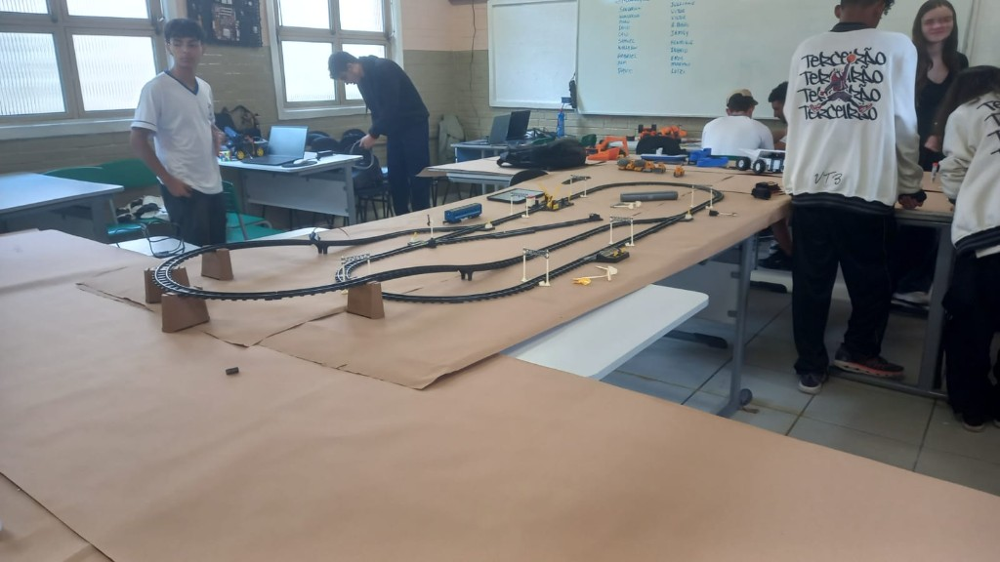
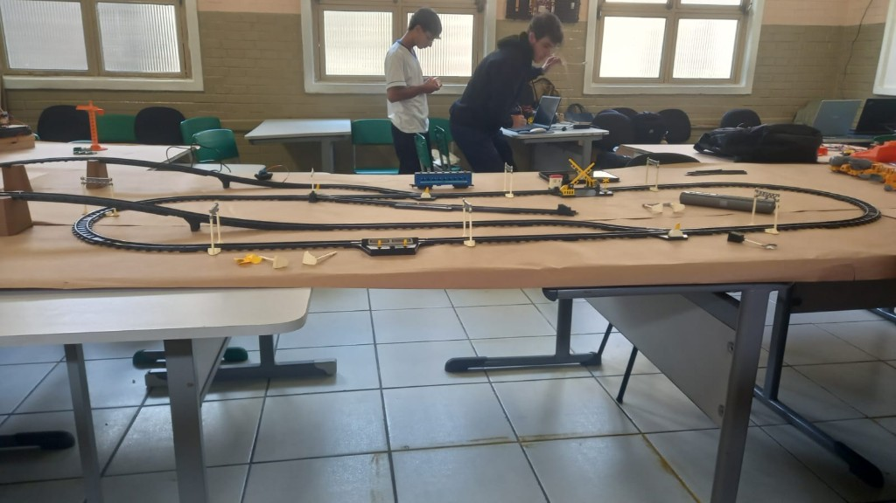
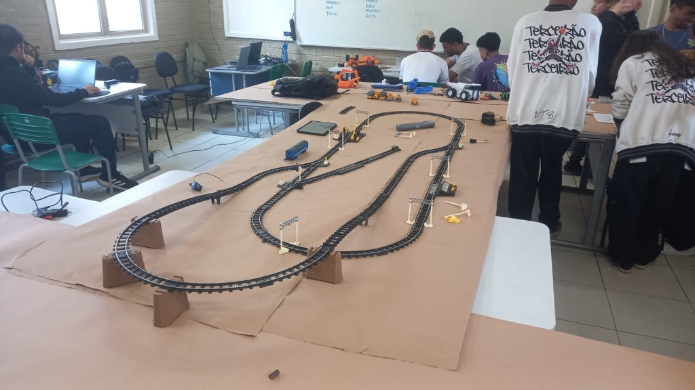

Visão Geral
A maquete foi montada sobre uma base de MDF de 1,20 × 0,80 m, com trilhos em escala HO. Cada elemento — mina, porto, aeroporto e vias — foi posicionado para simular uma cadeia logística real de extração até exportação.

Projeto escolar · Escala HO
Documentação da construção, programação e operação do ferrorama — da extração na mina até a exportação pelo porto.
Trem, mina, caminhões 3D e construção da maquete.
01Fotos reais da construção do ferrorama na sala de aula.
02Como os caminhões se movem e como o trem funciona.
03Transporte e exportação dos materiais.
04O que é uma mina e como reproduzimos na maquete.
05Central que coordena todo o sistema.
O Ferrorama simula toda a cadeia produtiva do minério de ferro e carvão — da extração na mina até a exportação pelo porto ou aeroporto — integrando modelismo ferroviário, impressão 3D e programação em Arduino.
Demonstrar como materiais brutos percorrem diferentes modos de transporte até chegar ao mercado internacional.
Combinar física (motores, sensores), modelismo e lógica de programação em um único projeto integrado.
Relacionar a maquete com a economia brasileira, onde o minério de ferro é um dos principais produtos de exportação.
Visão esquemática de como os módulos se conectam na base de MDF.
Utilizamos escala HO (1:87) para trilhos, locomotiva e vagões. Os caminhões foram impressos em escala compatível (~1:87) e o aeroporto usa aviões em escala 1:500.
A construção física levou cerca de 6 semanas: 2 semanas para a base e paisagismo, 2 para trilhos e eletrônica, e 2 para impressão 3D, testes e acabamento final.
Sim. A central possui modo manual (cada subsistema independente) e modo automático (sequência completa mina → caminhões → trem → porto/aeroporto).
Não. Após carregar o código no Arduino, a maquete funciona de forma autônoma. O computador é usado apenas para programar, ajustar parâmetros e monitorar via porta serial.
Como foi construída a maquete, peça por peça
A maquete foi montada sobre uma base de MDF de 1,20 × 0,80 m, com trilhos em escala HO. Cada elemento — mina, porto, aeroporto e vias — foi posicionado para simular uma cadeia logística real de extração até exportação.

Locomotiva elétrica em escala HO com vagões basculantes para carvão e minério de ferro. Os trilhos formam um circuito fechado com desvios controlados por servomotores, permitindo rotas diferentes para carga e descarga.

A mina foi construída com espuma expandida esculpida, pintura acrílica e detalhes em palitos e areia. Dois poços representam a extração de ferro e carvão, com esteira simulada que "alimenta" os vagões do trem.

Os caminhões basculantes foram modelados no Tinkercad e impressos em PLA na impressora 3D da escola. Cada caminhão recebeu um motor DC micro com redução, montado na base oculta por baixo da pista.
MDF, trilhos HO, espuma, acrílico, fios, Arduino, sensores IR, servomotores, PLA para impressão 3D e tinta acrílica para acabamento paisagístico.
Corte do MDF, pintura do terreno, fixação dos trilhos e planejamento das áreas (mina, porto, aeroporto).
Escultura da mina em espuma, aplicação de grama sintética, riachos com resina e detalhes rochosos.
Modelagem no Tinkercad, impressão dos caminhões, lixamento, pintura e encaixe dos motores na base.
Montagem dos circuitos, soldagem, testes de motores, sensores IR e servomotores dos desvios.
Programação final, ajustes de velocidade, montagem do painel de controle e ensaios do modo automático.
| Componente | Especificação | Observação |
|---|---|---|
| Base | MDF 15 mm · 120 × 80 cm | Pintada com tinta acrílica marrom/verde |
| Trilhos | Escala HO · código 100 | Circuito oval com 2 desvios |
| Locomotiva | Elétrica HO · 12 V DC | 3 vagões basculantes |
| Caminhões | PLA · ~8 cm cada | 3 unidades com motor próprio |
| Mina | Espuma + acrílico | 2 poços (ferro e carvão) |
Desenho da carroceria basculante e chassi no Tinkercad, com furo para eixo do motor.
PLA a 210 °C, camada de 0,2 mm, preenchimento 20%. Suportes apenas na caçamba.
Lixamento leve, pintura spray cinza e detalhes à mão (faróis, para-choque).
Motor colado na base oculta; caminhão encaixado sobre o eixo com silicone.
Os caminhões derrapavam nas curvas da pista. Resolvemos colando tiras de borracha no eixo e aumentando o peso com chumbo fundido dentro da carroceria.
Registro fotográfico da montagem do ferrorama na sala de aula

O layout foi montado sobre mesas unidas e cobertas com papel kraft, formando a base provisória da maquete. Os trilhos em escala HO criam um circuito com desvios, trechos elevados e acessórios como semáforos e passagem de nível — tudo montado de forma colaborativa pela turma.

Além dos trilhos, a maquete integra elementos de automação: sensores, motores e um painel de controle embutido na via. Ao fundo, a equipe trabalha no código e nos ajustes eletrônicos que coordenam o funcionamento do trem.

A construção envolveu toda a turma do terceirão: uns cuidaram da parte física dos trilhos e suportes, outros da programação e testes. O tablet na mesa era usado para monitorar sensores e ajustar parâmetros em tempo real.
Mesas niveladas, papel kraft como terreno e fixação dos trilhos com suportes de cartão para trechos elevados.
Semáforos, passagem de nível, guindaste e vagões posicionados para simular uma operação logística real.
Conexão dos circuitos eletrônicos, testes com locomotiva e programação via Arduino e laptops.
Estas fotos documentam a fase de prototipagem e montagem do Ferrorama — antes da transferência definitiva para a base de MDF e do acabamento paisagístico final descritos na seção de Montagem.
Como os caminhões se locomovem e como o trem funciona
Cada caminhão possui um motor DC controlado por um driver L298N conectado ao Arduino. O movimento segue uma pista guia; sensores infravermelhos (IR) nas extremidades detectam quando o veículo chega ao fim e invertem a direção automaticamente.
const int motorA = 5, motorB = 6;
const int sensorEsq = 2, sensorDir = 3;
void setup() {
pinMode(motorA, OUTPUT);
pinMode(motorB, OUTPUT);
pinMode(sensorEsq, INPUT);
pinMode(sensorDir, INPUT);
}
void loop() {
if (digitalRead(sensorDir) == LOW) {
// Fim da pista — inverte
analogWrite(motorA, 0);
analogWrite(motorB, 180);
delay(500);
} else {
analogWrite(motorA, 180);
analogWrite(motorB, 0);
}
}Quando o sensor IR detecta a borda preta da pista (sinal LOW), o motor inverte por 500 ms antes de retomar. Isso evita que o caminhão saia dos trilhos guia nas extremidades.

Arduino Mega, L298N, sensores IR TCRT5000, servomotores SG90 e fonte 12 V regulada para 5 V.
O trem é acionado por um motor DC na locomotiva, com velocidade regulada por PWM no pino 9. Reed switches nas estações de carga pausam o trem por 3 segundos enquanto os vagões são "carregados".
const int pinoMotorTrem = 9;
const int sensorEstacao = 4;
void loop() {
analogWrite(pinoMotorTrem, 200);
if (digitalRead(sensorEstacao) == LOW) {
analogWrite(pinoMotorTrem, 0);
delay(3000);
}
}O sensor magnético detecta um ímã colado no vagão. Quando o trem passa pela estação da mina ou do porto, o ímã aciona o reed switch e dispara a parada programada.

2 pontos: estação da mina (carga) e estação do porto (descarga). Cada uma com reed switch e LED indicador.
Dois desvios SG90 definem se o trem segue para o porto ou para o ramal do aeroporto. O ângulo padrão é 0° (porto); ao receber sinal da central, move para 90° (aeroporto).
#include <Servo.h>
Servo desvioPorto;
void setup() {
desvioPorto.attach(10);
desvioPorto.write(0);
}
void irParaAeroporto() {
desvioPorto.write(90);
delay(800);
}| Pino | Função | Componente |
|---|---|---|
| 2, 3 | Entrada digital | Sensores IR caminhão 1 |
| 4 | Entrada digital | Reed switch estação mina |
| 5, 6 | Saída PWM | Motor caminhão 1 (L298N) |
| 7, 8 | Saída PWM | Motor caminhão 2 (L298N) |
| 9 | Saída PWM | Motor locomotiva |
| 10, 11 | Saída PWM | Servomotores desvios |
| 12–17 | Entrada digital | Botões do painel |
| A4, A5 | I2C | Display LCD 16×2 |
Evite usar delay() longo no loop principal quando vários motores rodam ao mesmo tempo. Preferimos flags e millis() para não travar os outros subsistemas durante pausas do trem.
Transporte e exportação dos materiais extraídos

Após o trem descarregar minério e carvão nos silos do porto, guindastes articulados (feitos com palitos e fio) simulam a carga em navios-carga. O porto representa a etapa de exportação marítima — principal via para ferro e carvão no comércio internacional.
Na maquete, LEDs vermelhos indicam "navio atracado" e um motor linear move a esteira do cais, sugerindo o fluxo contínuo de mercadoria embarcada.

O aeroporto complementa o porto como rota alternativa de transporte. Aviões cargueiros em miniatura (escala 1:500) representam o envio rápido de materiais de alto valor ou peças urgentes.
Na maquete, caminhões levam carga do trem até o terminal aéreo; um LED piscante simula pista ativa e decolagem programada via temporizador no Arduino.
| Critério | Porto | Aeroporto |
|---|---|---|
| Volume transportado | Alto (milhões de toneladas) | Baixo (cargas especiais) |
| Custo | Menor por tonelada | Muito maior |
| Velocidade | Semanas (marítimo) | Horas (aéreo) |
| Na maquete | Rota padrão do trem | Rota alternativa via desvio |
| Material típico | Minério de ferro, carvão | Amostras, peças urgentes |
O Brasil é um dos maiores exportadores mundiais de minério de ferro, principalmente para China, Japão e Europa.
Um dos maiores terminais de minério do mundo, em Vitória (ES) — referência para nossa maquete portuária.
EFVM liga as minas de Minas Gerais ao litoral — inspirou o circuito ferroviário da maquete.
Um navio Valemax pode carregar até 400 mil toneladas de minério — equivalente a cerca de 4 mil vagões de trem. Na maquete, LEDs indicam carga contínua no cais.
O que é uma mina e como funciona na realidade e na maquete


Uma mina de ferro é uma instalação onde o minério de ferro — rocha rica em óxido de ferro (hematita ou magnetita) — é extraído do subsolo ou a céu aberto. O minério passa por britagem, separação magnética e pelletização antes de ser transportado ao aço.
Grandes crateras escavadas com caminhões fora de estrada. Comum no Brasil (Minas Gerais, Pará).
Túneis e galerias abaixo da superfície. Usada quando o minério está em profundidade.
Reproduzimos uma mina a céu aberto com dois poços: um para ferro (tom avermelhado) e outro para carvão (tom escuro). Uma esteira motorizada leva o material até os caminhões 3D, que por sua vez entregam ao trem — espelhando a logística real de uma operação integrada.
Perfuração, detonação e escavação do minério.
Fragmentação da rocha em pedaços menores.
Separação magnética do ferro da ganga.
Trem ou caminhão até porto ou siderúrgica.
Minério + carvão → ferro-gusa → aço.
| Aspecto | Minério de Ferro | Carvão Mineral |
|---|---|---|
| Cor na maquete | Tom avermelhado / ferrugem | Preto / cinza escuro |
| Função | Matéria-prima do aço | Combustível do alto-forno |
| Poço na mina | Poço principal (maior) | Poço secundário |
| Transporte | Vagão basculante 1 e 2 | Vagão basculante 3 |
Na vida real, mineradoras investem em recuperação de áreas degradadas e redução de emissões. Na maquete, representamos isso com uma faixa verde de reflorestamento ao redor da mina.
Central que coordena trem, caminhões, porto e aeroporto

A área de controle concentra um Arduino Mega conectado a todos os subsistemas. Botões físicos e um display LCD 16×2 permitem ligar/desligar cada módulo, ajustar velocidade do trem e acionar sequências automáticas.
Manual (cada elemento independente) ou automático (sequência completa mina → porto).
Mostra status em tempo real: posição do trem, estado dos caminhões e alertas.
Fonte 12 V com barramento de distribuição; fusíveis individuais por circuito.
Monitor serial no PC para debug e logs de eventos durante demonstrações.
void modoAutomatico() {
iniciarMina();
aguardarCarga();
liberarCaminhoes();
aguardarTrem();
acionarPorto();
if (cargaUrgente) acionarAeroporto();
exibirStatus("Ciclo completo");
}| Modo | Descrição | Quando usar |
|---|---|---|
| Manual | Cada botão liga/desliga um subsistema | Demonstrações, testes, manutenção |
| Automático | Sequência completa mina → exportação | Apresentações e feiras de ciências |
| Emergência | Botão vermelho para todos os motores | Imprevistos ou superaquecimento |
Escala 1:87, padrão em modelismo ferroviário.
Driver que controla motores DC com Arduino.
Modulação de largura de pulso — controla velocidade.
Sensor magnético de proximidade.
Plástico biodegradável usado na impressão 3D.
Digital Command Control — controle digital de trens.